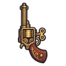
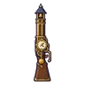

หุ่นไร้หน้า · ร่างไม้ดำ
มอนธาตุไม่มีธาตุ Lv 91–94
เจอที่
| แมพ | โซน | Lv | ภูมิภาค |
|---|---|---|---|
| โรงหุ่นใต้วิหาร ชั้น 2 · โต๊ะช่าง | 91–94 | เมืองหอระฆัง | |
| หอรากมืด (Dark Root) | หัวใจต้นไม้มืด | 90–99 |
ค่าสถานะตามเลเวล
| Lv | HP | ATK | DEF | MDEF | EXP | Job |
|---|---|---|---|---|---|---|
| 91 | 152,400 | 303–454 | 52 | 22 | 264 | 198 |
| 92 | 156,975 | 308–462 | 53 | 22 | 267 | 200 |
| 94 | 166,315 | 320–480 | 54 | 23 | 272 | 204 |
ตีด้วยธาตุไหนดี
แรงขึ้น: —
เบาลง: วิญญาณ ×0.25
วัตถุดิบที่ดรอป
| ของ | โอกาส | |
|---|---|---|
| ข้อต่อไม้หุ่น | 82.5% | 1 ชิ้น (15% ได้ 2) |
อุปกรณ์ที่ดรอป (9)
| ของ | โอกาส |
|---|---|
| 0.25% | |
| เกราะอัศวินจันทรา (เกราะอก) | 0.15% |
| เกราะอัศวินจันทรา (สนับขา + รองเท้าเกราะ) | 0.15% |
| 0.12% | |
 ปืนพกคู่กล่องดนตรี | 0.12% |
| 0.12% | |
 ลูกซองหอนาฬิกา | 0.12% |
| 0.06% | |
| เกราะอัศวินจันทรา (จี้จันทร์เต็มดวง) | 0.05% |
สกิล
ดึง (Lv 25+) · ดึง (Lv 60+) · ทุบพื้น (Lv 60+)